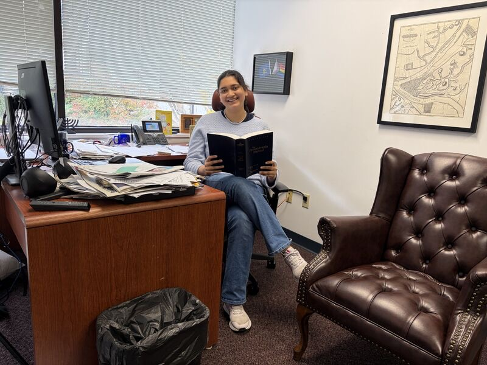
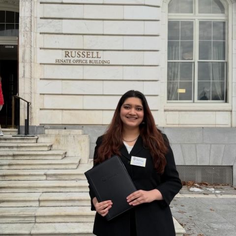

Health policy, student advocacy, health equity on campus, and the community health work that came first.
01 · Health policy & advocacy
The systems that shape patient care

Fig. 1During my internship in Rep. Frankel's office.
Pennsylvania House of Representatives · Institute of Politics, University of Pittsburgh · Aug – Dec 2025
Intern for Representative Dan Frankel, District 23
Rep. Frankel serves as majority chair of the Pennsylvania House Health Committee. During my internship in his office:
I researched and wrote draft legislation to support the career development of nurse aides and reduce nurse aide turnover.
I researched and drafted legislation to mitigate the risks of building more data centers.
I recruited speakers for House Health Committee hearings on adding Gaucher disease to Pennsylvania's newborn screening panel, a bell-to-bell phone ban in schools, and a secondhand smoke ban to protect casino workers.
Learned
As someone heading into healthcare, this internship reinforced for me how important it is to be a stakeholder in the systems that shape patient care. I'm grateful to the constituents who shared their experiences and perspectives with me.
Thanks to
Sean R. Harrington, Robin Ondo, Daphne Retter, and Erika Fricke in Rep. Frankel's office. Nello Giorgetti, Dennis McManus, and Akaia Oatis at Pitt's Institute of Politics ran the internship program.
Institute of Politics, University of Pittsburgh · Mar 2024
Legislator for a Day
I was one of twelve students selected for this state-level civic immersion program. I shadowed Rep. Arvind Venkat through legislative sessions, policy meetings, and committee hearings at the Pennsylvania State Capitol, and saw firsthand how healthcare policy and state governance work.

Fig. 2Outside the Russell Senate Office Building during ACC Advocacy Days.
University of Pittsburgh Student Government Board · Apr 2025 – May 2026
Anti-Hate Ad-Hoc Committee Chair
I founded and chaired this student-led committee to address and prevent acts of hate and bias on campus through inclusive, student-centered programming. I collected qualitative insights into the culture of hate and belonging on campus. I then implemented university-wide initiatives to close the gap between experiencing a hate incident and reporting it. I also represented Pitt at the Eradicate Hate Global Summit.
ACC Advocacy Days, Washington, D.C.
I was chosen for Pitt's delegation to the Atlantic Coast Conference Advocacy Days. We met with staff from the offices of both Pennsylvania senators and three Pennsylvania House representatives. We advocated for research funding, student aid, support for international students, and guardrails on AI.
Drawing on my engineering background, I spoke to AI legislation. I argued that universities should build AI literacy and ethics into curricula across disciplines, alongside stronger rules on data privacy, student protections, and the environmental costs of large-scale computing.
With
Fellow members of the University of Pittsburgh Student Government Board, and student government leaders from across the ACC.
02 · Health equity on campus
Designing for the people around me
You & M.E.I. · University of Pittsburgh · Co-founder & Entrepreneurial Lead · 2023 – 2026
A campus-wide menstrual equity initiative
I used the engineering design process to address period poverty on campus.
Need-finding
I designed and distributed surveys, organized focus groups, benchmarked existing programs, and reviewed the literature on menstrual equity. I compiled the data to make the case for free period products for all menstruators in residence halls.
Pilot
With peers and the university administration, we launched a pilot in two residence halls. We collected feedback, re-evaluated, and adapted the program before expanding it to every residence hall, reaching more than 6,000 students. Read The Pitt News coverage.
Funding
We applied for grants and competed in entrepreneurship competitions. We were finalists in the 2025 Big Idea Competition and won its Best Video Submission award. Read the Pitt Innovation Institute article.
Education
I led educational sessions on identifying and addressing period poverty for more than 50 Pitt staff members and students. With T. Raynes, I also presented We Bleed Red: Navigating Menstrual Equity through an Intersectional Lens at the 2024 Residence Life Peer-to-Peer Symposium.
Now
As the project grows, my focus has shifted to destigmatizing periods and making sure access to products becomes institutional.
Our Big Idea Competition video, which won Best Video Submission in 2025.
Before college, I attended the Middlesex County Academy for Allied Health & Biomedical Sciences. Much of my community work then was already about health.
2019 – 2022
The Orchid Organization
I co-founded the Orchid Organization, a student-led initiative in Middlesex County that promotes personal health and physical and mental wellness in our community.
WE Volunteer Now grant, Allstate Foundation · 2021
Reusable period packs for local shelters
Our project addressed the lack of access to menstrual products in our community. With the grant, we bought 200 heavy-flow reusable pads. We chose them over single-use pads, even though they cost more, because they last. We assembled 100 "period packs," each with two pads, so one could be washed while the other was in use, plus care instructions and hair ties.
Donated to
St. Lucy's Emergency Shelter, Hope House, Homeless Solutions, HBP Rain Foundation, Raphael's Life House, Helping the Homeless Inc., and Covenant House NJ.
Also
Interact Club (Rotary-sponsored), President: organized food drives, gifts for residents of a local nursing home, and disease-awareness efforts.
Teens Against Racism: Director of Outreach.
Earlier health volunteering: personal health advocate at St. Joseph's Senior Home, and recreational activities volunteer at Nirvana Adult Day Care.
At Pitt: Muslim Student Association board member (2023–2025) and Residence Life student staff.